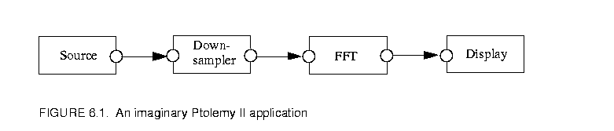
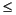
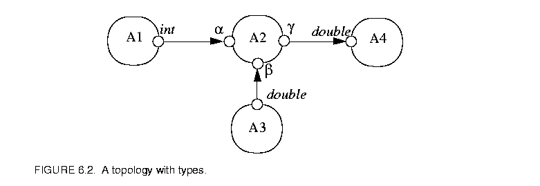
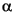
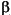
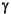
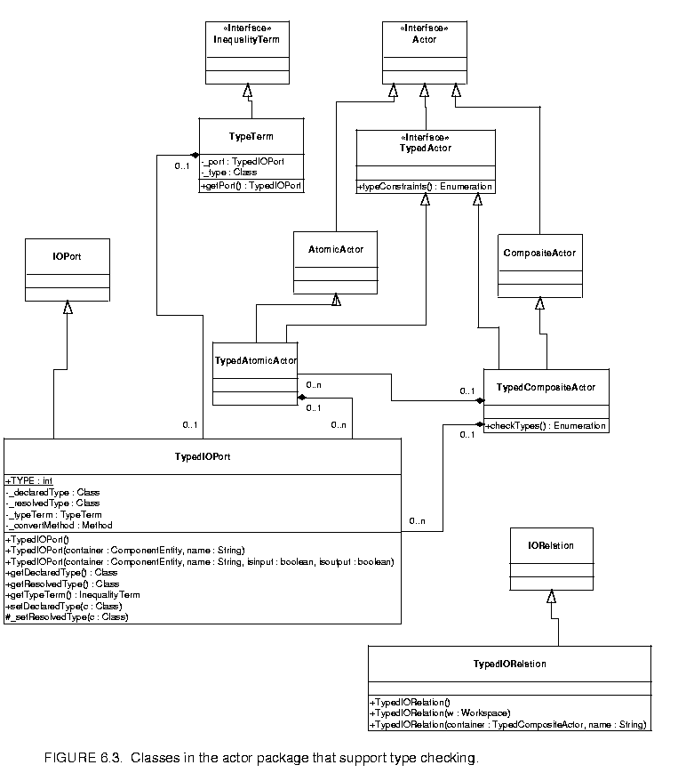
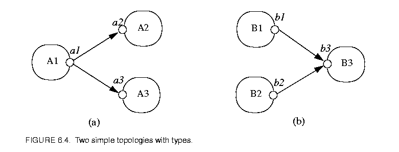
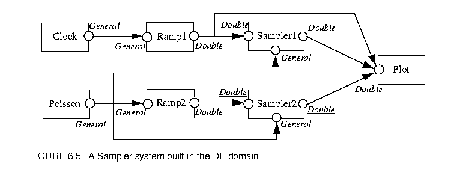
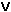

Page 8 out of 12 total pages
The computation infrastructure provided by the actor classes is not statically typed, i.e., the IOPorts on actors do not specify the type of tokens that can pass through them. This can be changed by giving each IOPort a type. One of the reasons for static typing is to increase the level of safety, which means reducing the number of untrapped errors [8].
In a computation environment, two kinds of execution errors can occur, trapped errors and untrapped errors. Trapped errors cause the computation to stop immediately, but untrapped errors may go unnoticed (for a while) and later cause arbitrary behavior. Examples of untrapped errors in a general purpose language are jumping to the wrong address, or accessing data past the end of an array. In Ptolemy II, the underlying language Java is quite safe, so errors rarely, if ever, cause arbitrary behavior.1 However, errors can certainly go unnoticed for an arbitrary amount of time. As an example, figure 6.1 shows an imaginary application where a signal from a source is downsampled, then fed to a fast Fourier transform (FFT) actor, and the transform result is displayed by an actor.

Suppose the FFT actor can accept ComplexToken at its input, and the behavior of the Downsampler is to just pass every second token through regardless of its type. If the Source actor sends instances of ComplexToken, everything works fine. But if, due to an error, the Source actor sends out a StringToken, then the StringToken will pass through the sampler unnoticed. In a more complex system, the time lag between when a token of the wrong type is sent by an actor and the detection of the wrong type may be arbitrarily long.In languages without static typing, such as Lisp and the scripting language Tcl, safety is achieved by extensive run-time checking. In Ptolemy II, if we imitated this approach, we would have to require actors to check the type of the received tokens before using them. For example, the FFT actor would have to verify that the every received token is an instance of ComplexToken, or convert it to ComplexToken if possible. This approach gives the burden of type checking to the actor developers, distracting them from their development effort. It also relies on a policy that cannot be enforced by the system. Furthermore, since type checking is postponed to the last possible moment, the system does not have fail-stop behavior, so a system may generate an error only after running for an extended period of time, as figure 6.1 shows. To make things worse, an actor may receive tokens from multiple sources. If a token with the wrong type is received, it might be hard to identify from which source the token comes. All these make debugging difficult.
To address this and other issues discussed later, we added static typing to Ptolemy II. This approach is consistent with Ptolemy 0.x. In general-purpose statically-typed languages, such as C++ and Java, static type checking done by the compiler can find a large fraction of program errors. In Ptolemy II, execution of a model does not involve compilation. Nonetheless, static type checking can correspondingly detect problems before any actors fire. In figure 6.1, if the Source actor declares that its output port type is String, meaning that it will send out StringTokens upon firing, the static type checker will identify this type conflict in the topology.
In Ptolemy II, because models are not compiled, static typing alone is not enough to ensure type safety at run-time. For example, even if the above Source actor declares its output type to be Complex, nothing prevents it from sending out a StringToken at run-time. So run-time type checking is still necessary. With the help of static typing, run-time type checking can be done when a token is sent out from a port. I.e., the run-time type checker checks the token type against the type of the output port. This way, a type error is detected at the earliest possible time, and run-time type checking (as well as static type checking) can be performed by the system instead of by the actors.
One design principle of Ptolemy II is that data type conversions that lose information are not implicitly performed by the system. In the data package, a lossless data type conversion hierarchy, called the type lattice, is defined (see figure 4.2). In that hierarchy, the conversion from a lower type to a higher type is lossless, and is supported by the token classes. This lossless conversion principle also applies to data transfer. This means that across every connection from an output port to an input, the type of the output must be the same as or lower than the type of the input. This requirement is called the type compatibility rule. For example, an output port with type Int can be connected to an input port with type Double, but a Double to Int connection will generate a type error during static type checking. This behavior is different from Ptolemy 0.x, but it should be useful in many applications where the users do not want lossy conversion to take place without their knowledge.
As can be seen from above examples, when a system runs, the type of a token sent out from an output port may not be the same as the type of the input port the token is sent to. If this happens, the token must be converted to the input port type before it is used by the receiving actor. This kind of run-time type conversion is done transparently by the Ptolemy II system (actors are not aware it). So the actors can safely cast the received tokens to the type of the input port. This makes the actor development easier.
Ousterhout [31] argues that static typing discourages reuse.
"Typing encourages programmers to create a variety of incompatible interfaces, each interface requires objects of specific type and the compiler prevents any other types of objects from being used with the interface, even if that would be useful".
In Ptolemy II, typing does apply some restrictions on the interaction of actors. Particularly, actors cannot be interconnected arbitrarily if the type compatibility rule is violated. However, the benefit of typing should far outweigh the inconvenience caused by this restriction. In addition, the automatic run-time type conversion provided by the system permits ports of different types to be connected (under the type compatibility rule), which partly relaxes the restriction caused by static typing. Furthermore, there is one important component in Ptolemy that brings much flexibility to the actor interface, the type-polymorphic actors.
Type-polymorphic actors (called polymorphic actors in the rest of this chapter) are actors that can accept multiple types on their ports. For example, the Downsampler in figure 6.1 does not care about the type of token going through it; it works with any type of token. In general, the types on some or all of the ports of a polymorphic actor are not rigidly defined to specific types when the actor is written, so the actor can interact with other actors having different types, increasing reusability. In Ptolemy 0.x, the ports on polymorphic actors whose types are not specified are said to have ANYTYPE, but Ptolemy II uses the term undeclared type, since the type on those ports cannot be arbitrary in general. The acceptable types on polymorphic actors are described by a set of type constraints. The static type checker checks the applicability of a polymorphic actor in a topology by finding specific types for them that satisfy the type constraints. This process is called the type resolution, and the specific types are called the resolved types.
Static typing and type resolution have other benefits in addition to the ones mentioned above. Static typing helps to clarify the interface of actors and makes them more manageable. Just as typing may improve run-time efficiency in a general-purpose language by allowing the compiler to generate specialized code, when a Ptolemy system is synthesized to hardware, type information can be used for efficient synthesis. For example, if the type checker asserts that a certain polymorphic actor will only receive IntTokens, then only hardware dealing with integers needs to be synthesized.
To summarize, Ptolemy II takes an approach of static typing coupled with run-time type checking. Lossless data type conversions during data transfer are automatically implemented. Polymorphic actors are supported through type resolution.
In a Ptolemy II topology, the type compatibility rule imposes a type constraint across every connection from an output port to an input port. It requires that the type of the output port, outType, be the same as the type of the input port, inType, or less than inType under the type lattice in figure 4.2. I.e.,

inTypeThis guarantees that information is not lost during data transfer. If both the outType and inType are declared, the static type checker simply checks whether this inequality is satisfied, and reports a type conflict if it is not.
In addition to the above constraint imposed by the topology, actors may also impose constraints. This happens when one or both of the outType and inType is undeclared, in which case the actor containing the undeclared port needs to describe the acceptable types through type constraints. All the type constraints in Ptolemy II are described in the form of inequalities like the one in (1). If a port has a declared type, its type appears as a constant in the inequalities. On the other hand, if a port has an undeclared type, its type is represented by a variable, called the type variable, in the inequalities. The domain of the type variable is the elements of the type lattice. The type resolution algorithm resolves the undeclared types subject to the constraints. If resolution is not possible, a type conflict error will be reported. As an example of the inequality constraints, consider figure 6.2.

The port on actors A1 has declared type int; the ports on A3 and A4 have declared type double; and the ports on A2 have their types undeclared. Let the type variables for the undeclared types be

,
, and
, the type constraints from the topology are:Now, assume A2 is a polymorphic adder, capable of doing addition for integer, double, and complex numbers, and the requirement is that it does not lose precision during the operation. Then the type constraints for the adder can be written as:
The first two inequalities constrain the output precision to be no less than input, the last one requires that the data on the adder ports can be converted to Complex losslessly.
These six inequalities form the complete set of constraints and are used by the type resolution algorithm to solve for , , and .
This inequality formulation is inspired by the type inference algorithm in ML [28]. There, equalities are used to represent type constraints. In Ptolemy II, the lossless type conversion hierarchy naturally implies inequality relation among the types. In ML, the type constraints are generated from program constructs. In a heterogeneous graphical programming environment like Ptolemy II, the system does not have enough information about the function of the actors, so the actors must present their type information by either declaring the type on their port, or specify a set of type constraints to describe the acceptable types on the undeclared ports. The Ptolemy II system also generates type constraints based on (1).
This formulation converts type resolution into a problem of solving a set of inequalities. An efficient algorithm is available to solve constraints in finite lattices [34], which is described in the appendix through an example. This algorithm finds the set of most specific types for the undeclared types in the topology that satisfy the constraints, if they exist.
As mentioned earlier, the static type checker flags a type conflict error if the type compatibility rule is violated on a certain connection. There are other kind of type conflicts indicated by one of the following:
The first case can happen, for example, if the port on actor A1 in figure 6.2 has declared type Complex. The second case can happen if an actor does not specify any type constraints on an undeclared output port. This is due to the nature of the type resolution algorithm where it assigns all the undeclared types to NaT at the beginning. If the type constraints do not restrict a type variable to be greater than NaT, it will stay at NaT after resolution. The third case is considered a conflict since an abstract type does not correspond to an instantiable token class.
To avoid the second case above, any output port must either have a declared type, or some constraints to force its type to be greater than NaT. This requirement should be easily satisfied on most actors. A situation that needs some attention is the source actor. A source actor cannot leave its output port type unconstrained. One way to cope with this is to declare the type at a time after the type information is known, but prior to type resolution. For example, if the output data is determined by a parameter set by the user, the parameter can be evaluated during the initialization phase of the execution and the port type can be declared at the end of the initialization, which precedes type resolution.
The declared type is a contract between an actor and the Ptolemy II system. If an actor declares an output port to have a certain type, it asserts that it will only send out tokens whose types are less than or equal to that type. If an actor declares an input port to have a certain type, it requires the system to only send tokens that are instances of the class of that type to that input port. Run-time type checking is the component in the system that enforces this contract. When a token is sent out from an output port, the run-time type checker finds its type using the run-time type identification (RTTI) capability of the underlying language (Java), and compares the type with the declared type of the output port. If the type of the token is not less than or equal to the declared type, a run-time type error will be generated.
As discussed before, type conversion is needed when a token sent to an input port has a type less than the type of the input port but is not an instance of the class of that type. Since this kind of lossless conversion is done automatically, an actor can safely cast a received token to the declared type. On the other hand, when an actor sends out tokens, the tokens being sent do not have to have the exact declared output port type. Any type that is less than the declared type is acceptable. For example, if an output port has declared type double, the actor can send IntToken from that port. As can be seen, the automatic type conversion simplifies the input/output handling of the actors.
Note that even with the convenience provided by the type conversion, actors should still declare the input types to be the most general that they can handle and the output types to be the most specific type that includes all tokens they will send. This maximizes their applications. In the previous example, if the actor only sends out IntToken, it should declare the output type to be int to allow the port to be connected with an input with type int.
If an actor has ports with undeclared types, its type constraints can be viewed as both a requirement and an assertion from the actor. The actor requires the resolved types to satisfy the constraints. Once the resolved types are found, they serve the role of declared types at run time. I.e., the type checking and type conversion system guarantees to only put tokens that are instances of the class of the resolved type to input ports, and the actor asserts to only send tokens whose types are less than or equal to the resolved type from output ports.
Type checking and type resolution are done in the actor package. The Actor interface, the AtomicActor, CompositeActor, IOPort and IORelation classes are extended with TypedActor, TypedAtomicActor, TypedCompositeActor, TypedIOPort and TypedIORelation, respectively, as shown in figure 6.3

. The container for TypedIOPort must be a ComponentEntity implementing the TypedActor interface, namely, TypedAtomicActor and TypedCompositeActor. The container for TypedAtomicActor and TypedCompositeActor must be a TypedCompositeActor. TypedIORelation constraints that TypedIOPort can only be connected with TypedIOPort. TypedIOPort has a declared type and a resolved type, plus the methods to set and query them. Undeclared type is represented by a null declared type. If a port has a non-null declared type, the resolved type will be the same as the declared type. CallingsetDeclaredType() with a non-null argument will set both the declared and resolved type.
Static type checking is done in the checkTypes() method of TypedCompositeActor. This method finds all the connection within the composite by first finding the output ports on deep contained entities, and then finding the deeply connected input ports to those output ports. Transparent ports are ignored for type checking. For each connection, if the types on both ends are declared, static type checking is performed using the type compatibility rule. If the composite contains other opaque TypedCompositeActors, this method recursively calls the checkTypes() method of the contained actors to perform type checking down the hierarchy. Hence, if this method is called on the top level TypedCompositeActor, type checking is performed through out the hierarchy.
If a type conflict is detected, i.e., if the declared type at the source end of a connection is greater than or incomparable with the type at the destination end of the connection, the ports at both ends of the connection are recorded and will be returned in an Enumeration at the end of type checking. Note that type checking does not stop after detecting the first type conflict, so the returned Enumeration contains all the ports that have type conflicts. This behavior is similar to a regular compiler, where compilation will generally continue after detecting errors in the source code.
The class Inequality in the graph package is used to represent type constraints. This class contains two objects implementing the InequalityTerm interface, which represent the lesser and greater terms. TypeTerm in the actor package is such a class that implements the InequalityTerm interface. In type resolution, an inequality term can be a type variable that represents the type of a port with undeclared type, a type constant that represent the type of a port with declared type, or a type constant not associated with a port. For example, in the constraint int in figure 6.2, is a type variable representing the resolved type of one of the inputs of the adder A2, and int is a type constant representing the declared type (and also the resolved type) of the port on actor A1; in the constraint Complex, Complex is a type constant not associated with any port. To accommodate these needs, the class TypeTerm provides two constructors, one with a TypedIOPort argument, the other with a Class argument which is a type in the type hierarchy. When an instance of TypeTerm is constructed using the first constructor, the value of the TypeTerm is the resolved type of the associated TypedIOPort, and the term may be either a constant or a variable, depending on whether the type of the port is declared or not. When a TypeTerm is constructed using the second constructor, it represents a type constant not associated with a port. The class TypedIOPort has a method getTypeTerm(), which returns a TypeTerm associated with itself. To form a type constraint between two TypedIOPorts, the code can be written as:
// port1 and port2 are two TypedIOPorts, the constraint is that
// the type of port1 is less than or equal to the type of port2.
Inequality constraint = new Inequality(port1.getTypeTerm(), port2.getTypeTerm());
To form a type constraint like Complex, the code can be written as:
// port is the TypedIOPort associated with the type variable .
TypeTerm complexTerm = new TypeTerm(ComplexToken.class);
Inequality constraint = new Inequality(port.getTypeTerm(), complexTerm);
The TypedActor interface has a typeConstraints() method, which returns the type constraints of this actor. For atomic actors, the type constraints are different in different actors, but the TypedAtomicActor class provides a default implementation, which is that the type of any input port with undeclared type must be less than or equal to the type of any undeclared output port. Ports with declared types are not included in the default constraints. If all the ports have declared type, no constraints are generated. This default works for most of the control actors such as commutator, multiplexer, and the Downsampler in figure 6.1. It also covers most of the constraints for arithmetic actors such as the adder in figure 6.2. For the adder, the default type constraints covers and , the typeConstraints() method of the adder only needs to add Complex. This method can be written as:
public Enumeration typeConstraints() {
LinkedList result = new LinkedList();
result.appendElements(super.typeConstraints());
TypeTerm complexTerm = new TypeTerm(ComplexToken.class);
// _output is the output TypedIOPort.
TypeTerm portTerm = _output.getTypeTerm();
Inequality constraint = new Inequality(portTerm, complexTerm);
result.insertLast(ineq);
return result.elements();
}
The typeConstraints() method in TypedCompositeActor collects all the constraints within the composite. It works in a similar fashion as the checkTypes() method, where it recursively goes down the containment hierarchy to collect type constraints of the contained actors. It also scans all the connections and forms type constraints on connections involving undeclared types. As checkTypes(), if this method is called on the top level container, all the type constraints within the composite are returned.
The Manager class has a resolveTypes() method that invokes type checking and resolution. It uses the InequalitySolver class in the graph package to solve the constraints. If type conflicts are detected during type checking or after type resolution, this method throws TypeConflictException. This exception contains an Enumeration of TypedIOPorts where type conflicts occur. The resolveTypes() method is called inside Manager after all the mutations are processed. If TypeConflictException is thrown, it is caught within the Manager and an ExecutionEvent is generated to pass the exception information to the user interface.
Run-time type checking is done in the send() method of TypedIOPort. The checking is simply a comparison of the type of the token being sent with the resolved type of the port. If the type of the token is less than or equal to the resolved type, type checking is passed, otherwise, an IllegalActionException is thrown.
The need for type conversion is also determined in the send() method. The type of the destination port is the resolved type of the port containing the receivers that the token is sent to. If the token is not an instance of the class of the destination resolved type, type conversion is needed.
The conversion is done by the convert() method in the token classes. This method is invoked through the Reflection interface of Java. Each TypedIOPort has a method _getConvertMethod() that returns a java.reflect.Method for the convert() method of the resolved type. When type conversion is needed, the send() method of the port sending out the token calls _getConvertMethod() of the destination port to get the convert() method, then invoke it to perform the conversion. Since both the send() and the _getConvertMethod() methods are in TypedIOPort, the _getConvertMethod() is private. For efficiency, the reference to the convert method is cached in TypedIOPort, and _getConvertMethod() will return the cached reference unless it is called for the first time after the resolved type changes.
In figure 6.1, if the Downsampler is designed to do downsampling for any kind of token, its type constraint is just samplerIn samplerOut, where samplerIn and samplerOut are the types of the input and output ports, respectively. The default type constraints works in this case. Assuming the Display actor just calls the stringValue() method of the received tokens and displays the string value in a certain window, the declare type of its port would be General. Let the declared types on the ports of FFT be Complex, the The type constraints of this simple application are:
Where sourceOut represents the declared type of the Source output. The last constraint does not involve a type variable, so it is just checked by the static type checker and not included in type resolution. Depending on the value of sourceOut, the ports on the Downsampler would be resolved to different types. Some possibilities are:
Consider two simple topologies in figure 6.4.

where a single output is connected to two inputs in 6.4(a) and two outputs are connected to a single input in 6.4(b). Denote the types of the ports by a1, a2, a3, b1, b2, b3, as indicated in the figure. Some possibilities of legal and illegal type assignments are:Figure 6.5

shows a more complete system built in Ptolemy II DE domain. The types are marked by the ports. The underline below some types means that the corresponding port has undeclared type and those types are the resolved type. The functions of the actors are:1. Clock and Poisson: The Clock actor generates events at regular interval. Its output is a "pure signal" without value, so the output port type is General, which corresponds to the base Token class. The Poisson actor is similar to Clock except that the time spacing between the events follows the Poisson probability distribution.
2. Ramp: This actor sends out events whose value changes by a constant amount every time. It has two Parameters for the initial value and step size. These two Parameters are set by the user and evaluated at the initialization stage. The type of the output is the higher type of the two Parameters. For example, if the initial value Parameter has type Int and the step size has type Double, the output type is Double. Figure 6.5 assumes the output type is Double. The input port of the Ramp serves as a trigger. The output event is sent out when a token is received from the input. Since the trigger input does not care the value of the received token, its type is declared as General, which means that any type of token can trigger the output.
3. Sampler: This is a polymorphic actor. It passes a token from its input port on the left to the output on the right when a token is received from the bottom input port, so the bottom input is also a trigger input. This actor can do sampling for any type of token, but to ensure that information is not lost, it requires that the type on the left input is less than or equal to the type on the right output. This constraint is covered by the default implementation of the type constraint in TypedAtomicActor, so the Sampler class does not need to override the typeConstraints() method.
4. Plot: This is also a polymorphic actor. It plots the value of the received token in a certain window. Assuming that it requires the input to be a kind of ScalarToken, then the type constraint of this actor is that the input type is less than or equal to Scalar.
In this example, all the ports with undeclared type are resolved to Double.
The type resolution algorithm starts by assigning all the type variables the bottom element of the type hierarchy, NaT, then repeatedly updating the variables to a greater element until all the constraints are satisfied, or when the algorithm finds that the set of constraints are not satisfiable. The kind of inequality constraints the algorithm can determine satisfiability are the ones with the greater term (the right side of the inequality) being a variable, or a constant. The algorithm allows the left side of the inequality to contain monotonic functions of the type variables, but not the right side. The first step of the algorithm is to divide the inequalities into two categories, Cvar and Ccnst. The inequalities in Cvar have a variable on the right side, and the inequalities in Ccnst have a constant on the right side. In the example of figure 6.2, Cvar consists of:
The repeated evaluations are only done on Cvar, Ccnst are used as checks after the iteration is finished, as we will see later. Before the iteration, all the variables are assigned the value NaT, and Cvar looks like:
Where the current value of the variables are inside the parenthesis next to the variable.
At this point, Cvar is further divided into two sets: those inequalities that are not currently satisfied, and those that are satisfied:
Now comes the update step. The algorithm takes out an arbitrary inequality from the Not-satisfied set, and forces it to be satisfied by assigning the variable on the right side the least upper bound of the values of both sides of the inequality. Assuming the algorithm takes out int (NaT), then

NaT = intAfter is updated, all the inequalities in Cvar containing it are inspected and are switched to either the Satisfied or Not-satisfied set, if they are not already in the appropriate set. In this example, after this step, Cvar is:
The update step is repeated until all the inequalities in Cvar are satisfied. In this example, and will be updated and the solution is:
Note that there always exists a solution for Cvar. An obvious one is to assign all the variables to the top element, General, although this solution may not satisfy the constraints in Ccnst. The above iteration will find the least solution, or the set of most specific types.
After the iteration, the inequalities in Ccnst are checked based on the current value of the variables. If all of them are satisfied, a solution to the set of constraints is found.
This algorithm can be viewed as repeated evaluation of a monotonic function, and the solution is the fixed point of the function. Equation (2) can be viewed as a monotonic function applied to a type variable. The repeated update of all the type variables can be viewed as the evaluation of a monotonic function that is the composition of individual functions like (2). The evaluation reaches a fixed point when a set of type variable assignments satisfying the constraints in Cvar is found.
Rehof and Mogensen [34] proved that the above algorithm is linear time in the number of occurrences of symbols in the constraints, and gave an upper bound on the number of basic computations. In our formulation, the symbols are type constants and type variables, and each constraint contains two symbols. So the type resolution algorithm is linear in the number of constraints.
Synchronization errors in multi-thread applications are not considered here.
ptII at eecs berkeley edu Copyright © 1998, The Regents of the University of California. All rights reserved.